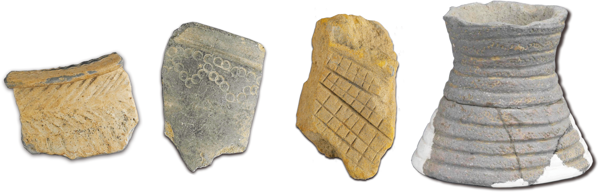

房基與墓葬
曲冰考古遺址出土的48座房基，均屬地表建築，房基周邊共發掘清理出171具石板棺，墓葬大多數呈北偏西80-70度間的方向，因保存狀況不佳棺內並無人骨、陪葬品少，僅出土一對玉玦。經由石板棺長度的測量統計，可知屬於成人的150公分以上的僅28具；130.01-150公分的也只有7具，其餘近80%當屬未成年孩童者，可見當時夭折率高。同時，有學者因此認為各時期居住於此的人數不多，
且居住的時間不長，當只是個小型聚落，屬「散村」模式。


遺物
出土石器可見打製、磨製、穿孔、片切割等技法，器型包括打製斧鋤形器、錛鑿形器、刀形器、砂岩刮削石器、刀斧混合石器、矛鏃形器、網墜、紡輪等。除當地石材外，亦使用東部閃玉為原料。

陶器則以夾砂陶為主，並有少量泥質陶，大多數為紅色系軟陶，有少量黑陶系軟陶（夾砂和泥質），極少數陶片上具紋飾，有刻劃紋、方格拍印紋、壓印紋、堆雕紋等。器形以容器類的罐形器為主，次為缽形器，少量壺、瓶、盆、碗、杯等以及具有特色且罕見的陶觚，為泥片貼塑、拍打成形。

此外，曲冰考古遺址出現玉器製作所留下之相關玉材及玉料，比重約占所有玉質遺留20％，資料極為突顯，顯示當地有明確製玉活動，類似規模及數量雖然遠少於花蓮豐田玉產區的平林、重光等考古遺址，但迄今仍罕見其他遺址有此現象。曲冰考古遺址以長條柱體為素材，以礫石研磨，由方取圓，逐漸製作成粗大圓柱體，以轆轤管鑽技術，由上至下對向管鑽取芯，同時形成玉環管狀及柱芯兩大素材物件，再鋸片輪切或用打擊法生成環玦毛坯，可使環玦大量迅速生產，最後可將輪狀毛胚穿孔或加工角狀突起，製造環玦飾品、紡輪等。